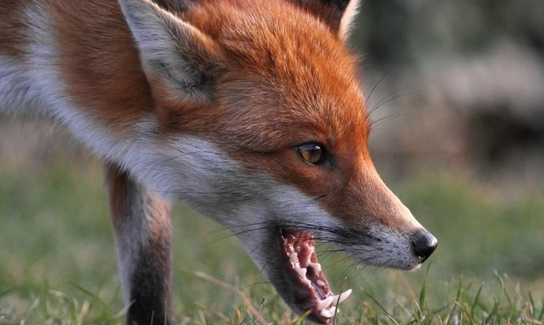

Сказ – це гостра інфекційна хвороба, що виникає після укусу зараженї сказом тварини. Хвороба протікає з сильним ураженням нервової системи і зазвичай закінчується смертю. Збудником захворювання є вірус.
Джерела інфекції – хворі на сказ тварини або, як, наприклад, в Південній Америці, – летючі миші.
- В Росії є вогнища сказу трьох типів:
- — природні осередки, в яких вірус цього захворювання передається від червоної лисиці борсукам, єнотоподібних собакам, вовкам та іншим (у західних і центральних районах, Поволжжя);
- — арктичні або природні полярні вогнища, в яких вірус є у песців;
- — «міські» осередки, в яких вірус циркулює серед бродячих собак, які передають його сільськогосподарським тваринам і кішкам.
Джерелами цієї інфекції для 60% хворих людей служать собаки, для 24% хворих людей – лисиці, для 10% – кішки, для 3% – вовки та ін. Період заразності у тварин починається за 3-10 днів до появи ознак захворювання і триває протягом всього періоду захворювання. Незрозуміла і неадекватна поведінка диких тварин – наприклад, вони приходять в населені пункти, наближені до людей, беруть їжу з рук, грають з собаками та дітьми. Це завжди повинно викликати побоювання, чи не хвора тварина, тому що така поведінка невластива диким представникам фауни. Зараження людини сказом відбувається при укусах або попаданні слини тварини, хворої цим захворюванням. Вірус цієї хвороби передається зі слиною. Особливу небезпеку представляють укуси в кисті рук і голову.
Хвороби людей головним чином пов’язані з пізнім зверненням укушених людей за медичною допомогою, також з порушенням режиму під час проходження курсу щеплень чи незавершеністю курсу їх прийому. Більшість людей, що захворіли після контакту з хворою твариною не зверталися до лікарні або інших медустанов. Людина, яка захворіла на сказ, є заразною.
Інкубаційний період захворювання триває мінімум 10 днів, а максимум може триває більше 1 року (в середньому – 1-2 місяці). Тривалість інкубаційного періоду залежить від кількості вірусів, що потрапили в рану, віку укушеного (у дітей інкубаційний період коротший, ніж у дорослих), обсягу ураженої тканини, відстані, що долається вірусом від місця ураження до центральної нервової системи.
Хвороба починається з появи сухості в роті, головного болю, загального нездужання, зниження апетиту, болю в м’язах і горлі, сухого кашлю, невеликого підвищення температури тіла, також можуть виникнути блювота і нудота. У 50-80% захворілих людей в місці укусу з’являються неприємні відчуття (тягнучі болі, печіння, підвищена чутливість, свербіж). Іноді рубець на місці укусу підпухає і знову червоніє. Хворий замкнутий, пригнічений, відмовляється від їжі, у нього порушується сон, його мучать жахливі сновидіння, він відчуває почуття туги і безпричинно страх. Через 1-3 дня у хворої людини з’являються водобоязнь, тривога та неспокій. При спробі випити воду, а потім і при вигляді самої води, при звуку води, що ллється і навіть при одній лише згадці про неї у хворої людини з’являється почуття жаху, і виникають хворобливі спазми м’язів гортані та глотки, вона починає дихати шумно (у вигляді судорожних і коротких подихів). Судоми можуть розвинутися також від направленого в обличчя струменя повітря, від дотику до шкіри, шуму і яскравого світла. Хвора людина стає буйною і агресивною. У неї розвиваються паралічі, і порушується свідомість. Смертельний результат настає від паралічу дихальних м’язів. Хвороба триває не більше одного тижня.
Якщо у людини, яку раніше вкусила тварина, з’явилися ознаки нездужання, потрібно негайно звернутися за медичною допомогою. Після отримання пошкодження від тварини треба відразу ж звернутися до найближчого медпункту. Всі амбулаторно-поліклінічні та лікарняні установи при зверненні людей, укушених, поцарапаних будь-якими тваринами, які контактували зі слиною тварин, зобов’язані негайно надати першу медичну допомогу постраждалим. Садна, подряпини, рани, місця контакту зі слиною слід добре промити струменем води з милом, краї рани треба обробити йодною настойкою або 40-70% спиртом, а потім слід накласти стерильну пов’язку. Після цього необхідно звернутися до травматологічного кабінету, а при його відсутності – в кабінет хірургії для проведення курсу щеплень проти цієї хвороби. Чим раніше буде розпочато курс щеплень, тим більш ймовірніший успіх лікування. Антитіла після введення вакцини з’являються в організмі укушеного людини через 12-14 днів. У приміщенні, де знаходилася хвора сказом людина, необхідно провести ретельну дезінфекцію. Людям, на слизові оболонки або шкіру яких потрапила слина хворої на сказ людини, також потрібно пройти курс щеплень проти цього захворювання